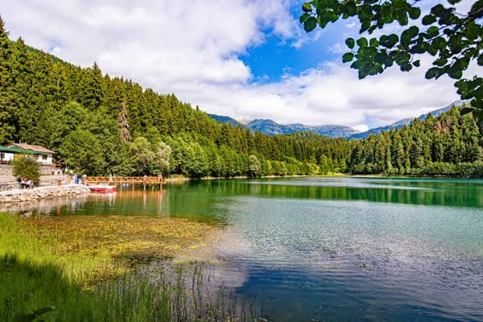

Satranç oynamak stratejik düşünme ve ileriyi görme becerilerimi geliştiriyor. Farklı açılışları öğrenmek ve pratik yapmak için çevrim içi platformları takip ediyorum. Siz de çevrim içi satranç oynamak veya bulmaca çözmek isterseniz Lichess sitesini ziyaret edebilirsiniz.
Kod yazmak ve sıfırdan çalışan bir web sayfası ortaya çıkarmak en büyük hobilerimden biri. Yeni etiketleri ve tasarım yöntemlerini öğrenirken eğitim videolarından da faydalanıyorum.
